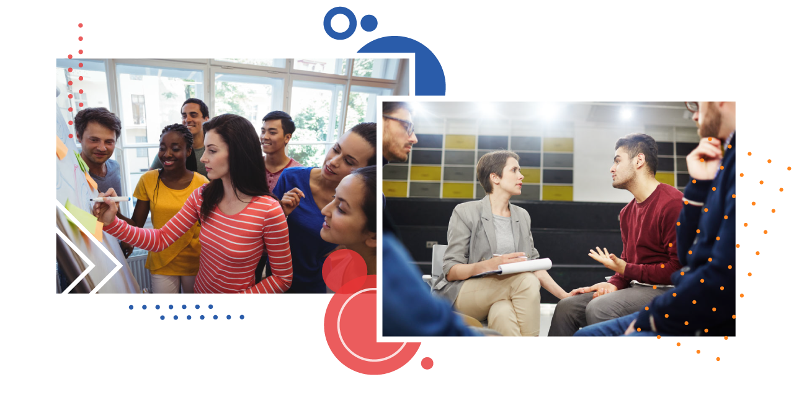

No mundo laboral as competências socioemocionais são cada vez mais faladas e requeridas, uma vez que são úteis para enfrentar os desafios da competitividade e da resolução de conflitos.

Figura 02 - Fonte: Freepick e editada pela equipe gráfica do projeto.
De forma recorrente, ouve-se, por parte de lideranças, a percepção de que os jovens em início de carreira não estavam prontos para o desempenho de suas atividades ocupacionais.
As competências socioemocionais não dependem de diplomas e certificados, sendo adquiridas como aprendizados subjetivos através das experiências ao longo da vida.